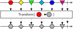
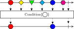

Operators
When building a Bonsai program, you chain together reactive operators to create new observable sequences. There are many different operators, which can create all kinds of observable sequences. These operators can be roughly grouped into different categories, depending on their shared characteristics.
| Category | Description |
|---|---|
| generate event streams from devices or files | |
| convert or process individual data items | |
 |
filter data items matching some specific condition |
| save data or trigger external outputs | |
| manage control flow or synchronize parallel inputs |
Source
Sources create sequences that generate notifications spontaneously. This means that you can place these nodes without connecting them to any input. Every Bonsai program will contain at least one source. Usually sources represent streams of data which are acquired from devices or files, such as cameras, microphones, accelerometers, WAV files, network sockets, touchpads, etc.
Note
Even though all sources can be placed independently, sometimes you can still connect an input to them. For example, if you place a FileCapture source by itself, it will playback all frames of the movie at the specified frame rate. However, if you connect it to an input, the next frame will be decoded only when a new notification arrives, allowing you to precisely control video playback.
Transform
Transforms apply an operation to individual data items in a sequence. They always take exactly one input sequence, and generate another sequence which has the same number of elements as the input, but where each item has been modified according to the function specified by the transform.
In other words, all transforms have a similar style of marble diagram:

Every transform will always produce exactly one item for every notification generated by the input sequence. Each item that is produced will be the result of applying the transform function on the elements of the input sequence, and is sent out immediately whenever a new notification is received. When the input sequence terminates successfully (or exceptionally), the transformed sequence also terminates.
The only distinction between different transforms will be in the exact function that is applied to each element (e.g., Grayscale will convert a sequence of color images to a sequence of grayscale images, while FindContours will convert a sequence of binary images into a sequence of contours).
Condition
Condition operators apply a filter on individual data items in a sequence. Similar to transforms, they always take exactly one input sequence, and generate another sequence where the only emitted elements are items from the original sequence that match the condition criteria.

The condition function is applied to individual items immediately whenever a new notification is received from the input sequence, and valid items are sent out as soon as they are found to match the criteria. When the input sequence terminates successfully (or exceptionally), the filtered sequence also terminates.
Note
The Condition operator allows you to specify arbitrary matching criteria using a node group. The input to the nested node group is the unfiltered sequence, and the output must be a sequence of elements of type bool, i.e. logical values indicating true or false depending on whether the current item is considered to match the criteria.
Sink
Whenever you need to save data into a file, trigger an external output, move a motor, or otherwise generate some kind of side effect with the data processed in Bonsai, you probably need to use a sink operator. Similar to transforms and conditions, sinks also apply a function to every individual element of an observable sequence. However, the application of the function will not modify or filter the input items in any way, which means the output sequence generated by a sink is identical to the input sequence.
For this reason, all sinks also share a very similar style of marble diagram:
Because the output sequence of a sink is exactly the same as the input sequence, sinks can always be placed at any point of the workflow without breaking existing behaviour.
Note
You can chain multiple sinks sequentially as long as the input is compatible. This can be very convenient when you need to run multiple side effects on a single data stream. A common application is to log data into a file while simultaneously transmitting it to an external device.
Combinator
Although a lot can be done with the right sequence of sources, transforms and sinks, there are many other operators which allow you to express more complex combinations of observables. These operators are grouped together under the Combinator category, but their behaviour can be extremely diverse.
Combinators can be used to merge data from multiple sources; control when observable sequences start and stop; or even to create entirely new sequences dynamically. Together, they provide an incredibly flexible toolkit to manipulate asynchronous data streams.